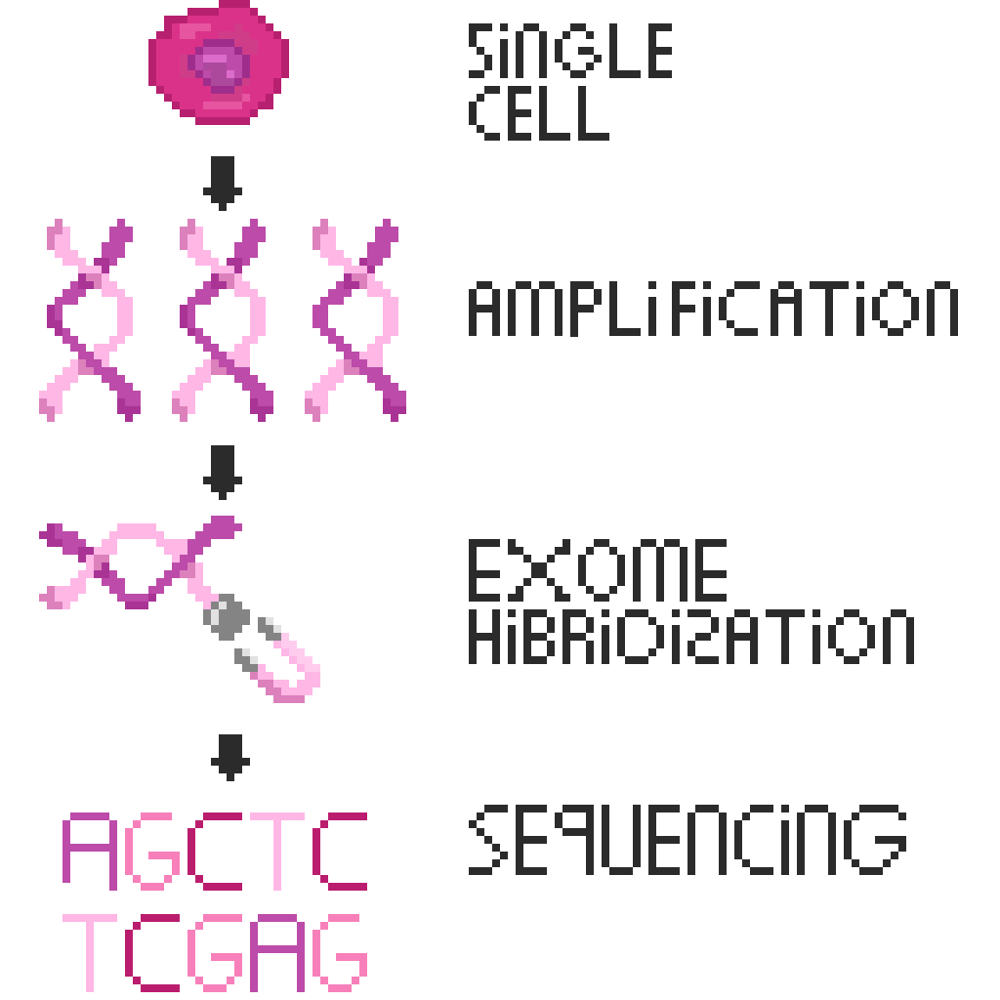

I did my graduate project at UMCG, where I worked on single-cell whole exome sequencing. Single-cell sequencing enables the study of heterogeneity in cancer cells by revealing low-frequency somatic variants (mutations affecting a single nucleotide) that are typically missed in bulk sequencing. These somatic mutations allow cancer cells to proliferate, invade surrounding tissue, metastasize, and develop treatment resistance. WES hybridization pulls out only the coding parts of the genome (~2%). Because WES sequences a smaller fraction of the genome, it is more cost-efficient to achieve a higher depth per base compared to WGS.
The main challenge of single-cell sequencing is that an individual cell contains only about 6 pg of DNA, with just a few copies of each genomic locus. This creates a dependence on whole-genome amplification (WGA); unfortunately, single-cell WGA (scWGA) methods can introduce technical biases that complicate the interpretation of downstream data.
My project focused on determining which amplification kit introduced the fewest biases, using copy number analysis and variant calling. I did variant calling inside a linux container within my windows computer (Python). After which I did the visualisation of the results with R. My work helped the lab determine which amplification method to continue testing across different cell lines.
